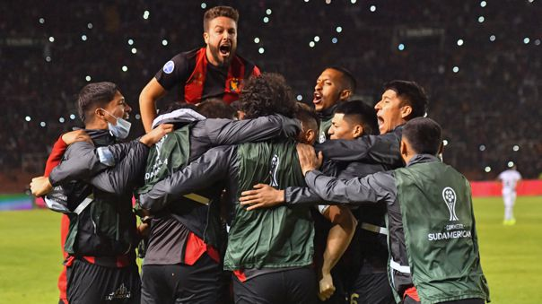

Deporte Internacional

Llegó a Argentina: Boca Juniors busca reunirse con Ricardo Gareca, según Olé
El diario Olé de Argentina dio a conocer que Juan Román Riquelme, vicepresidente de Boca Juniors, tiene la intención de reunirse con Ricardo Gareca para proponerle ser DT xeneize.
Aprender Mas
Vuelve al fútbol extranjero: Christofer Gonzales será nuevo jugador del Al Adalah de Arabia Saudita
En un comunicado, Sporting Cristal reporta que llegó a un acuerdo con Al Adalah por la transferencia de Christofer Gonzales. 'Canchita' deja la tienda celeste.
Aprender Mas

Ángel Di María pasó la revisión médica de Juventus y fue recibido a lo grande por hinchas
El delantero argentino Ángel Di María será anunciado oficialmente como nuevo jugador de Juventus de Turín.
Aprender MasÁngel Di María pasó la revisión médica de Juventus y fue recibido a lo grande por hinchas
El delantero argentino Ángel Di María será anunciado oficialmente como nuevo jugador de Juventus de Turín.
Aprender Mas
Cristiano Ronaldo: revelan la primera oferta de Chelsea por jugador de Manchester United
Chelsea lidera la puja por el fichaje de Cristiano Ronaldo, que no participará en la gira de Manchester United en Australia y Tailandia.
Aprender MasNo piensa en el retiro: el veterano Pepe Reina fichó por el Villarreal tras desvincularse de la Lazio
Pepe Reina, de 39 años, regresa al Villarreal después de diecisiete años. El guardameta disputará el puesto de titular con el argentino Gero Rulli.
Aprender Mas